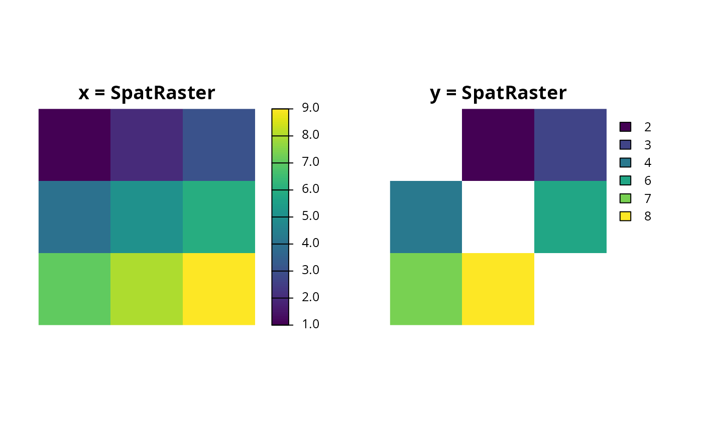
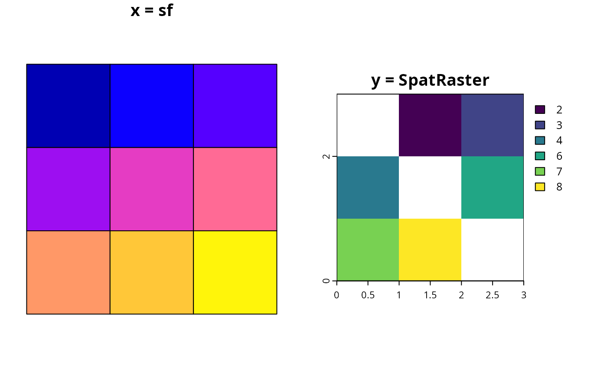
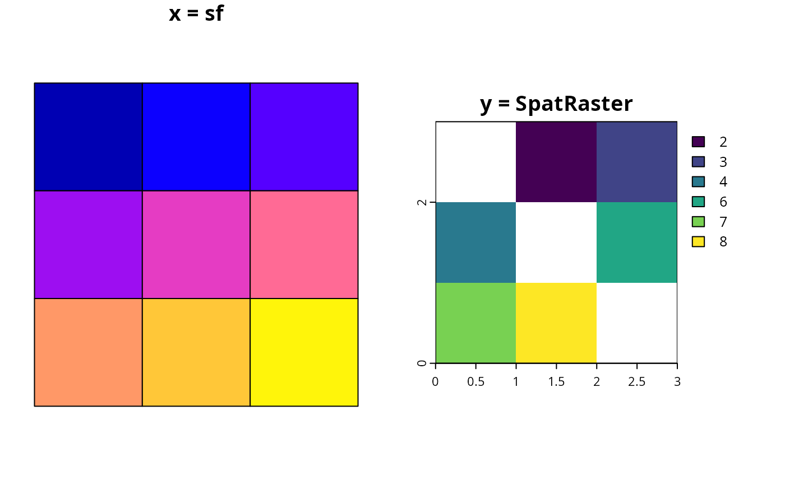

Find which of the units in a spatial data object intersect with the units in another spatial data object.
Usage
intersecting_units(x, y)
# S4 method for class 'Raster,ANY'
intersecting_units(x, y)
# S4 method for class 'ANY,Raster'
intersecting_units(x, y)
# S4 method for class 'Spatial,ANY'
intersecting_units(x, y)
# S4 method for class 'ANY,Spatial'
intersecting_units(x, y)
# S4 method for class 'SpatRaster,SpatRaster'
intersecting_units(x, y)
# S4 method for class 'sf,sf'
intersecting_units(x, y)
# S4 method for class 'SpatRaster,sf'
intersecting_units(x, y)
# S4 method for class 'sf,SpatRaster'
intersecting_units(x, y)Arguments
- x
sf::st_sf()orterra::rast()object.- y
sf::st_sf()orterra::rast()object.
Details
The performance of this function for large terra::rast() objects
can be improved by increasing the GDAL cache size.
The default cache size is 25 MB.
For example, the following code can be used to set the cache size to 4 GB.
See also
See fast_extract() for extracting data from spatial datasets.
Examples
# \dontrun{
# create data
r <- terra::rast(matrix(1:9, byrow = TRUE, ncol = 3))
r_with_holes <- r
r_with_holes[c(1, 5, 9)] <- NA
ply <- sf::st_as_sf(terra::as.polygons(r))
ply_with_holes <- sf::st_as_sf(terra::as.polygons(r_with_holes))
# intersect raster with raster
par(mfrow = c(1, 2))
plot(r, main = "x = SpatRaster", axes = FALSE)
plot(r_with_holes, main = "y = SpatRaster", axes = FALSE)

print(intersecting_units(r, r_with_holes))
#> [1] 2 3 4 6 7 8
# intersect raster with sf
par(mfrow = c(1, 2))
plot(r, main = "x = SpatRaster", axes = FALSE)
plot(ply_with_holes, main = "y = sf", key.pos = NULL, reset = FALSE)
 print(intersecting_units(r, ply_with_holes))
#> [1] 2 3 4 6 7 8
# intersect sf with raster
par(mfrow = c(1, 2))
plot(ply, main = "x = sf", key.pos = NULL, reset = FALSE)
plot(r_with_holes, main = "y = SpatRaster")

print(intersecting_units(ply, r_with_holes))
#> [1] 2 3 4 6 7 8
# intersect sf with sf
par(mfrow = c(1, 2))
plot(ply, main = "x = sf", key.pos = NULL, reset = FALSE)
plot(ply_with_holes, main = "y = sf", key.pos = NULL, reset = FALSE)
print(intersecting_units(r, ply_with_holes))
#> [1] 2 3 4 6 7 8
# intersect sf with raster
par(mfrow = c(1, 2))
plot(ply, main = "x = sf", key.pos = NULL, reset = FALSE)
plot(r_with_holes, main = "y = SpatRaster")

print(intersecting_units(ply, r_with_holes))
#> [1] 2 3 4 6 7 8
# intersect sf with sf
par(mfrow = c(1, 2))
plot(ply, main = "x = sf", key.pos = NULL, reset = FALSE)
plot(ply_with_holes, main = "y = sf", key.pos = NULL, reset = FALSE)
 print(intersecting_units(ply, ply_with_holes))
#> [1] 2 3 4 6 7 8
# }
print(intersecting_units(ply, ply_with_holes))
#> [1] 2 3 4 6 7 8
# }